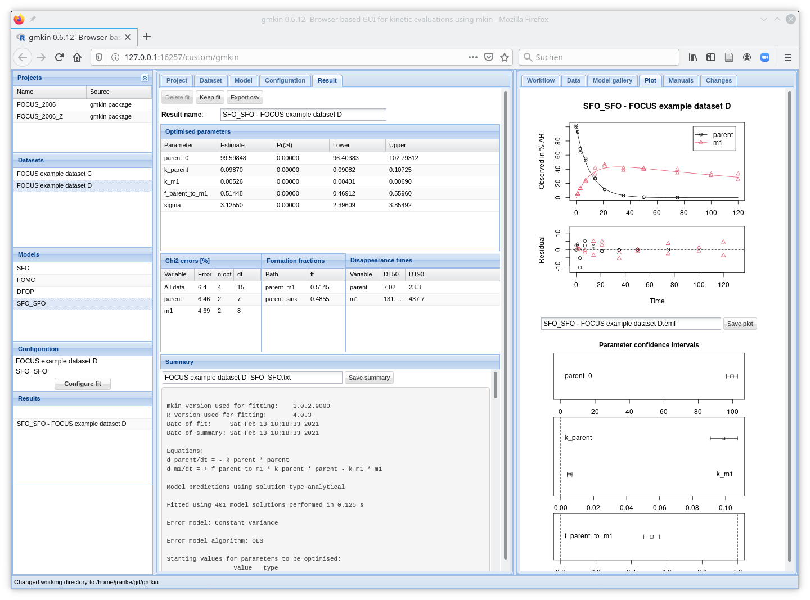

The R package gmkin provides a browser based graphical user interface (GUI) for fitting kinetic models to chemical degradation data based on R package mkin. The GUI is based on the gWidgetsWWW2 package developed by John Verzani. The GUI elements are created by the JavaScript library ExtJS which is bundled with gWidgetsWWW2.

For running gmkin you need a system running a recent version of R (version 3.1.0 or later), the gWidgesWWW2 package, the gmkin package and a web browser (Firefox/Iceweasel and Chrome work for me) with JavaScript enabled.
It should be possible to run gmkin on most laptop or desktop computers running Linux, Mac OS X, Windows XP or Windows 7. It is frequently checked under Linux and Windows 7.
To view the complete set of widgets in the browser window without resizing anything, it needs a screen space of 1366x740 pixels.
Please refer to CRAN for installation instructions and binary packages. If you are on Windows, please consult the FAQ for Windows, especially the entries “How do I install R for Windows?”, “How do I run it?”.
If you would like to upgrade your R installation, please refer to the respective FAQ entry.
Windows and Linux users running R 3.1.0 or later can make use of the package repository on R-Forge. For installing or upgrading to the latest released version, please start R and paste the command
install.packages("gmkin", repos = c("http://r-forge.r-project.org", getOption("repos")))
If you have not set your CRAN mirror yet, you may have to select one from the list that appears.
The above command temporarily adds the R-Forge repository to your package sources. It should pull the gmkin package and its dependencies, notably the gWidgetsWWW2 package which is not available from the CRAN archive (see below). Mac users that have the necessary development files installed can probably install from the source files in this repository (not tested).
In a previous version of this README I have described how to permanently add the R-Forge repository to your options. However, I noticed this has unwanted side effects, so I do not recommend it any longer. Therefore, you may want to revert such changes to your R startup options.
The latest changes to gmkin are recorded in the NEWS file, more details can be found in the commit history.
Without further preparation, you can start the GUI by starting R and pasting the following commands into the R terminal (R console on Windows):
require(gmkin)
gmkin()
You may also want to adapt the browser that R starts (using e.g.
options(browser="/usr/bin/firefox") on linux, or setting the default browser
on Windows).
For a complete overview of the functionality of the gmkin graphical user interface please refer to the manual available at the gmkin documentation website.
In case you would like to see the documentation of the underlying mkin package, please refer to its documentation website.
The R package gWidgetsWWW2 is not available on CRAN because it contains path names with more then 100 characters in the JavaScript files which limits its portability. Also, it attaches some R objects to the search path, which is, in its current form, not fully in line with the CRAN package policy. It is not a widely used library for creating graphical user interfaces and is not supported by a commercial company. However it makes it possible to create a reasonably complex user interface by just writing R code, and is therefore used by gmkin.
Users of the devtools package can also install gWidgetsWWW2 and gmkin directly from
the respective github repositories:
require(devtools)
install_github("jverzani/gWidgetsWWW2", quick = TRUE)
install_github("jranke/gmkin", quick = TRUE)
Installing gWidgetsWWW2 in this way yields a lot of warnings concerning overly
long path names (see Notes on gWidgetsWWW2 above). Using quick = TRUE skips
docs, multiple-architecture builds, demos, and vignettes, to make installation
as fast and painless as possible.
You can put the commands
require(gmkin)
require(utils)
gmkin()
into an .Rprofile file in the working directory where you would like to work
with gmkin and create a shortcut to start R and gmkin in this directory. For
your convenience, you can find such a file
here.
On Windows, you can save this file to the directory where you would like to
start gmkin by right clicking on the link to this file, choose 'save target as'
or similar, and choose .Rprofile. as the name (yes, there are two dots, one in the beginning,
one in the end). This will lead to the creation of a file named .Rprofile
which will be executed when you start R within this directory, e.g. by creating
a shortcut that starts R in this directory (see How do I install R for
Windows?,
and How do I run
it?).
FOCUS_2006FOCUS_2006_ZgmkingmkinwsUBA_model_gallery